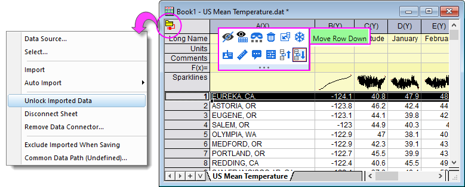
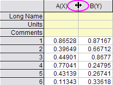

Arbeitsblatt anordnen: Spalten und Zeilen
Arrange-Wks
Auf dieser Seite wird die grundlegende Bearbeitung von Spalten und Zeile erläutert.
Spalten anhängen
Um einem Arbeitsblatt Spalten hinzuzufügen, führen Sie eine der folgenden Operationen aus:
- Wählen Sie im Menü Spalte: Spalten hinzufügen (fügt n Spalten hinzu).
- Klicken Sie auf die Schaltfläche Neue Spalten anhängen in der Symbolleiste Standard (fügt 1 Spalte hinzu).
- Klicken Sie mit der rechten Maustaste in das Arbeitsblattfenster, rechts neben das Arbeitsblattgitter, und wählen Sie anschließend im Kontextmenü Neue Spalte (fügt 1 Spalte hinzu).
Spalten werden als Y-Spalte(n) rechts neben der letzten Spalte des Arbeitsblatts eingefügt. Jede neue Spalte wird fortlaufend alphabetisch benannt (A, B, C, ... X, Y, Z, AA, BB, CC, ...), beginnend mit dem ersten noch nicht als Spaltennamen verwendeten Buchstaben.
Spalten einfügen
- Um eine Spalte einzufügen, markieren Sie die Spalte genau rechts von dem gewünschten Einfügepunkt, dann wählen Sie Bearbeiten: Einfügen oder klicken Sie mit der rechten Maustaste und wählen Sie im Kontextmenü Einfügen. Die neue Spalte wird als eine Y-Spalte zugeordnet, unabhängig von der Zuordnung der markierten Spalte.
- Um n Spalten in einer spezifischen Stelle im Arbeitsblatt einzufügen, wiederholen Sie die obige Vorgehensweise n-mal oder markieren Sie n Spalten genau rechts vom Einfügepunkt der Spalte und wählen Sie Bearbeiten: Einfügen oder klicken Sie mit der rechten Maustaste und wählen Sie Einfügen im Kontextmenü.
Spalten löschen
- Um eine oder mehrere Spalten aus dem Arbeitsblatt zu löschen, markieren Sie die zu löschende(n) Spalte(n), wählen Sie dann Bearbeiten: Löschen oder klicken Sie mit der rechten Maustaste und wählen Sie Löschen.
Beachten Sie, dass mit dem Löschen von Spalten (bzw. Datensätzen) aus dem Arbeitsblatt alle anderen optischen Darstellungen der Datensätze aus dem Projekt ebenfalls gelöscht werden. Wenn Sie z.B. eine Spalte mit Daten löschen, die zugleich als Diagramm im Diagrammfenster angezeigt wird, so wird auch das Diagramm aus dem Diagrammfenster gelöscht.
|
Hinweis: Um die Werte in den Spalten zu löschen, die Spalten selbst jedoch zu behalten, wählen Sie Bearbeiten: Entfernen.
|
Zeilen einfügen
- Um eine einzelne Zeile in einer spezifischen Stelle im Arbeitsblatt einzufügen, markieren Sie die Zeile, die direkt unter dem gewünschten Einfügepunkt liegt, und wählen Sie Bearbeiten: Einfügen oder klicken Sie mit der rechten Maustaste und wählen Sie Einfügen im Kontextmenü.
- Um n Zeilen in einer spezifischen Stelle im Arbeitsblatt einzufügen, wiederholen Sie die obige Vorgehensweise n-mal oder markieren Sie n Zeilen unter dem Einfügepunkt der Zeile und wählen Sie Bearbeiten: Einfügen oder klicken Sie mit der rechten Maustaste und wählen Sie Einfügen im Kontextmenü.
Zeilen löschen
- Um eine oder mehrere Zeilen aus dem Arbeitsblatt zu löschen, markieren Sie die zu löschende(n) Zeile(n), wählen Sie dann Bearbeiten: Löschen oder klicken Sie mit der rechten Maustaste und wählen Sie Löschen.
|
Hinweis: Um den Inhalt der Zeilen zu löschen, die Zeilen jedoch zu behalten, wählen Sie Bearbeiten: Entfernen statt Bearbeiten: Löschen.
|
Spalten/Zeilen verschieben
- Um eine Spalte oder verbundene Spalten nach links oder rechts zu verschieben, markieren Sie die Spalte, klicken Sie dann auf Nach links verschieben oder Nach rechts verschieben in der Symbolleiste Spalte.
- Um eine Spalte zur ersten oder letzten Position im Arbeitsblatt zu verschieben, markieren Sie die Spalte, wählen Sie dann im Menü Spalte: Spalten verschieben: An das Ende verschieben oder Spalte: Spalten verschieben: An den Anfang verschieben. Oder klicken Sie auf die Schaltflächen An das Ende verschieben oder An den Anfang verschieben in der Symbolleiste Spalte.
- Um eine Zeile oder verbundene Zeile nach oben/nach unten zu verschieben, markieren Sie die Zeile und wählen Sie Zeile nach oben verschieben oder Zeile nach unten verschieben auf der Minisymbolleiste.

- Beachten Sie, dass es einige Einschränkungen gibt:
- Wenn Sie Daten mit einem Datenkonnektor importiert haben, müssen Sie auf das grüne Konnektorsymbol und Importierte Daten entsperren klicken, bevor Sie die Zeilen verschieben können.
- Analyseberichtsblätter, in denen die Neuberechnung aktiviert ist, lassen kein Verschieben der Zeilen zu.
|
Hinweis: Wenn Sie Ausschneiden und Einfügen verwenden, verschieben Sie nur die Daten, nicht aber die Spalten oder Spaltenattribute.
|
Spaltenbreite ändern
- Um die Breite einer Spalte zu ändern, bewegen Sie Ihre Maus über den Rand des Spaltenheaders. Wenn sich der Zeiger in einen doppelköpfigen Pfeil umwandelt, ziehen Sie am Rand. Wenn mehrere Spalten ausgewählt sind, passt Origin sie an, sodass sie die gleiche Breite haben.

 | Wenn Sie die Strg-Taste gedrückt halten und auf die Blattreiter klicken, um mehrere Arbeitsblätter auszuwählen, dann wird das Ziehen eines Spaltenrands im aktiven Blatt die Breite der entsprechenden Spalte in allen ausgewählten Blättern anpassen. |
- Alternativ klicken Sie doppelt auf die Spalte, um den Dialog Spalteneigenschaften zu öffnen, und geben Ihren Wert in das Feld Breite ein. Dieser Wert wird in Einheiten von Zeichen angegeben (d. h. die maximale Anzahl von Zeichen, die angezeigt werden kann).
Breite und Höhe des Zeilenkopfes ändern
- Um die Breite der Zeilenüberschriften zu ändern, klicken Sie doppelt in das Arbeitsblattfenster, aber rechts neben das Arbeitsblattgitternetz. Geben Sie im Dialog Arbeitsblatteigenschaften den gewünschten Wert in das Textfeld Breite des Zeilenkopfs ein. Der Wert des Textfeldes wird in Einheiten von 1/10 der Texthöhe angegeben.
- Um die Höhe der Zeilenüberschriften zu ändern, ziehen Sie die Zeilenüberschriften, um die Höhe zu ändern (beeinflusst jeweils nur eine einzelne Zeile).
Spalten und Zeilen transponieren
- Um innerhalb eines aktiven Arbeitsblatts Spalten und Zeilen zu transponieren, wählen Sie Rekonstruieren: Transponieren. Dieser Menübefehl vertauscht in einem Arbeitsblatt Spalten mit Zeilen und Zeilen mit Spalten.
Wenn das Arbeitsblatt vor dem Transponieren mehr Zeilen als Spalten enthält, fügt Origin während des Transponierens die notwendigen Spalten hinzu. Origin benennt die eingefügten Spalten alphabetisch und beginnt dabei mit dem ersten Buchstaben, der noch nicht als Spaltenname im Arbeitsblatt verwendet wird.
|
Hinweis: Um die Spalten und Zeilen in Ihrem Arbeitsblatt transponieren zu können, müssen alle Spalten des Arbeitsblatts denselben Formattyp aufweisen. Jede der Spalten muss also beispielsweise auf Text & Numerisch oder Numerisch gesetzt sein. Das Spaltenformat wird in der Auswahlliste Format der einzelnen Spaltendialogfelder Eigenschaften (im Knoten Optionen) festgelegt. Ein Doppelklick auf die Spaltenüberschrift öffnet dieses Dialogfeld für die spezielle Spalte. Im voreingestellten Origin-Arbeitsblatt ist jede Spalte auf den Formattyp Text & Numerisch eingestellt.
|